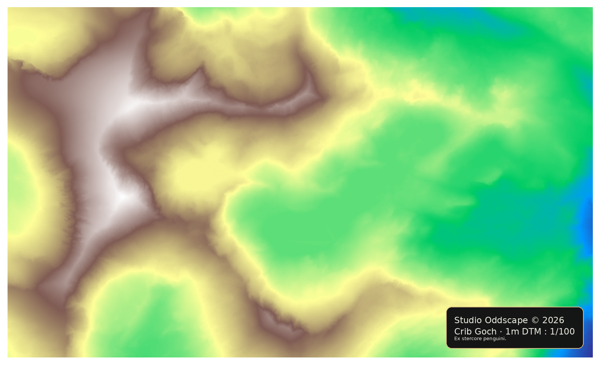
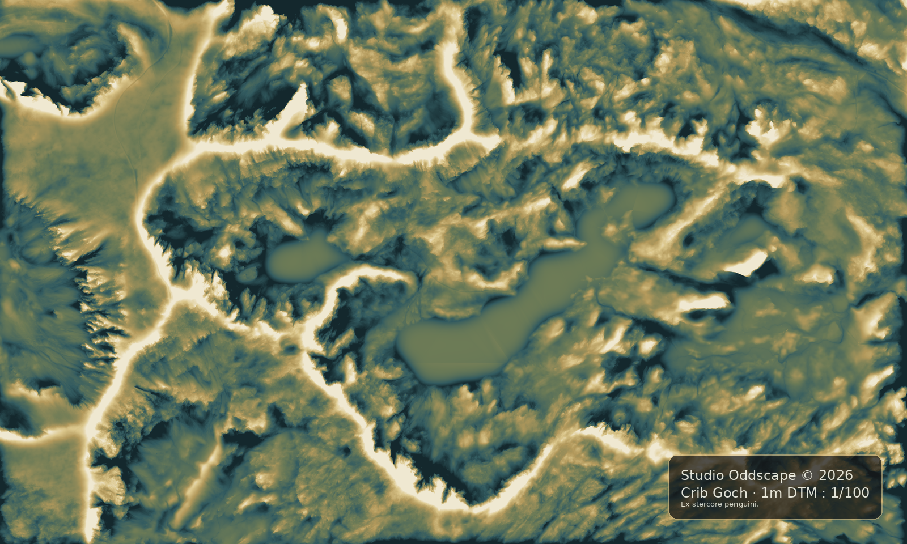
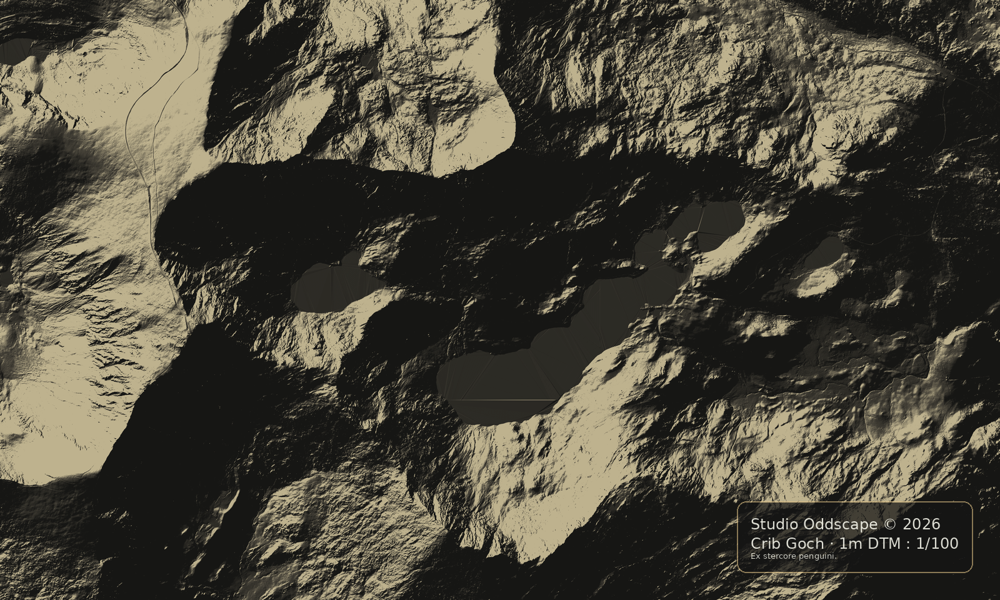

Snowdon &
Crib Goch
Crib Goch




Snowdon & Crib Goch terrain study developed using the Oddscape Terrain Engine™. Source data: Welsh Government 1m LiDAR DTM.
Llyn Llydaw and the Mountain Ridge
A compact upland terrain study centred on Crib Goch, Llyn Llydaw, Glaslyn and the upper slopes of Yr Wyddfa.
The model reveals the relationship between ridge, lake and valley across one of Wales’ most recognisable mountain landscapes.